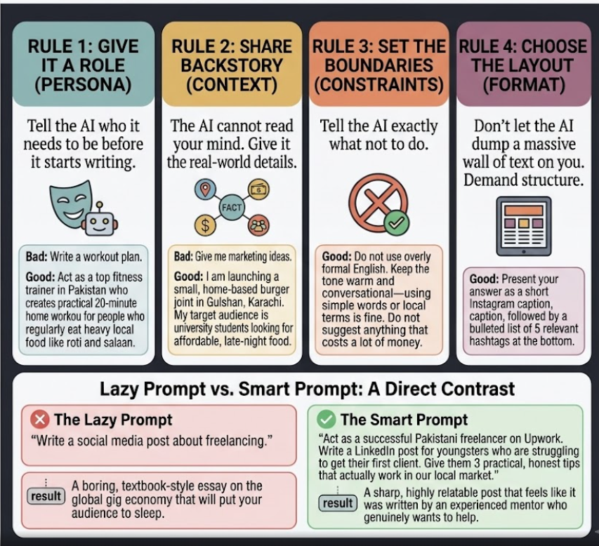

Chapter 04 · Chef's Formula
The 5 Golden Rules of Prompt Engineering
To consistently get high-quality responses from AI, every prompt should include five essential components. These components help the AI understand your intent, reduce ambiguity, and produce more accurate, relevant, and well-structured responses.
The Prompt Formula
Role + Task + Context + Constraints + Output Format

Rule 1: Role 👤 — Tell AI Who It Should Become
A role defines the AI's expertise, perspective, and communication style before it begins the task. Assigning a role helps AI respond like the right expert instead of giving a generic answer.
Why it matters: produces responses from the right perspective, adjusts tone and expertise, makes answers more relevant.
Act as an experienced career coach who helps university students prepare for software engineering jobs.
At this stage, AI knows who it is, but not what it should do.
Rule 2: Task 🎯 — Tell AI What You Want
The task clearly defines what you want the AI to accomplish. Without a task, AI has to guess your objective.
Why it matters: gives AI a clear goal, reduces misunderstanding, produces focused responses.
Act as an experienced career coach who helps university students prepare for software engineering jobs. Help me prepare for my first software engineering interview.
Now AI knows who it is and what it should do.
Rule 3: Context 📖 — Give AI the Background
Context provides the information AI needs to understand your situation. The more relevant context you provide, the better AI can personalize its response.
Why it matters: makes responses more relevant, reduces assumptions, improves accuracy.
Act as an experienced career coach who helps university students prepare for software engineering jobs. Help me prepare for my first software engineering interview. I know basic Python programming but have never attended a technical interview before.
Now AI understands the situation and can tailor its advice.
Rule 4: Constraints 📏 — Tell AI the Rules
Constraints specify the requirements and limitations that AI must follow while completing the task. Examples: use simple English, keep the answer under 500 words, avoid unnecessary theory, include practical advice.
Why it matters: keeps responses focused, prevents unwanted output, saves editing time.
Act as an experienced career coach who helps university students prepare for software engineering jobs. Help me prepare for my first software engineering interview. I know basic Python programming but have never attended a technical interview before. Use simple English. Keep the answer under 500 words. Avoid unnecessary theory. Include practical advice.
AI now knows both what to do and how to do it.
Rule 5: Output Format 📄 — Tell AI How to Present the Response
The output format tells AI how to organize and structure the final answer. Common formats: bullet points, table, email, blog post, Markdown, JSON, checklist, step-by-step guide.
Why it matters: improves readability, makes the response easier to use, reduces manual formatting.
Act as an experienced career coach who helps university students prepare for software engineering jobs. Help me prepare for my first software engineering interview. I know basic Python programming but have never attended a technical interview before. Use simple English. Keep the answer under 500 words. Avoid unnecessary theory. Include practical advice. Present the response as: 1. Interview preparation checklist 2. Common interview questions 3. A one-week study plan 4. Key takeaways
AI now has everything it needs to produce a high-quality response.
Summary
A great prompt answers five simple questions:
| Rule | Question |
|---|---|
| 👤 Role | Who should AI become? |
| 🎯 Task | What should AI do? |
| 📖 Context | What background should AI know? |
| 📏 Constraints | What rules should AI follow? |
| 📄 Output Format | How should the response be presented? |
Remember
Role + Task + Context + Constraints + Output Format
↓
High-Quality Prompt
The clearer your instructions, the better the AI's response.
Same five rules, four different ways to serve them. Next: Prompting Techniques.